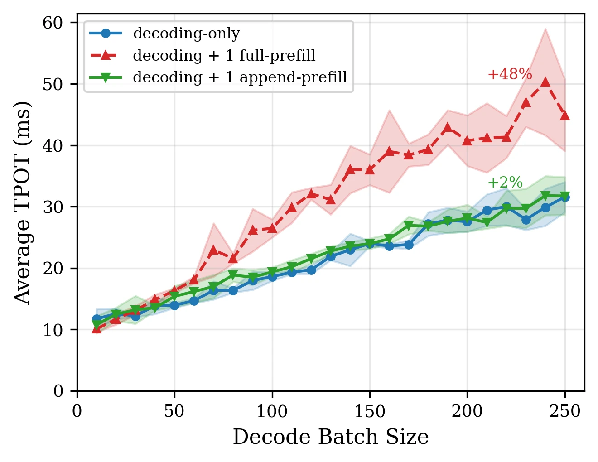
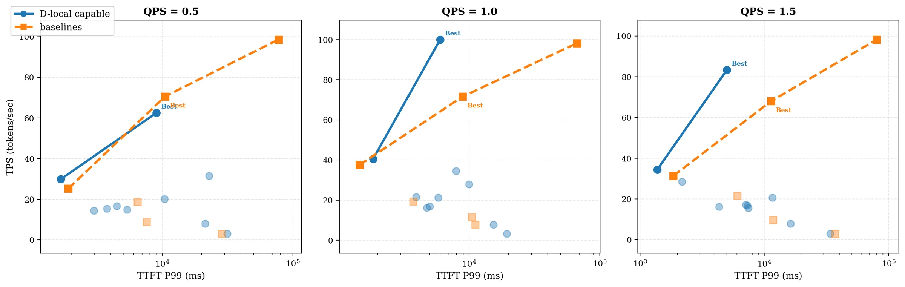
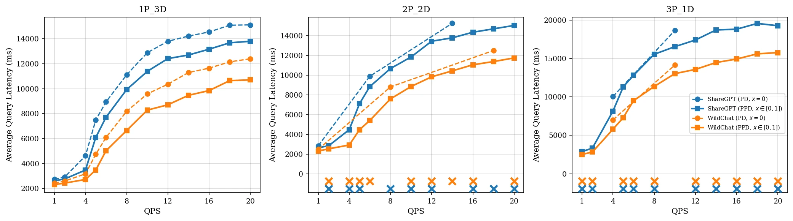
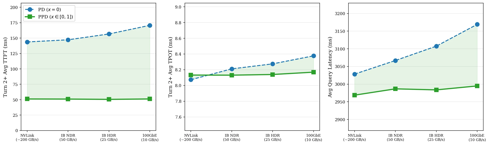
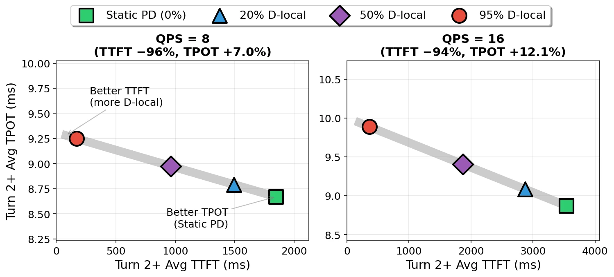
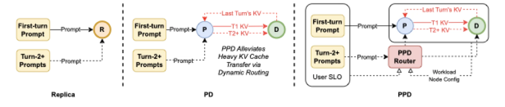

论文：Not All Prefills Are Equal: PPD Disaggregation for Multi-turn LLM Serving
作者：Zongze Li, Jingyu Liu, Zhen Xu, Yineng Zhang, Tahseen Rabbani, Ce Zhang；University of Chicago（5 人）+ Independent Researcher（Yineng Zhang）
发表：ICML 2026；arXiv 预印本 v2（2026-05-05 修订）
链接：https://arxiv.org/abs/2603.13358
代码：论文未给出官方代码仓库链接（正文与 arXiv 摘要页均无）。
构造示例。 一个 5 轮客服对话部署在 4×H100 的 PD 分离集群上（1 prefill 节点 + 3 decode 节点）：第 1 轮用户输入 1000 token、得到 200 token 回复；第 2 轮用户只追加了 50 token（"再详细一点"）。在传统 PD 分离下，第 2 轮请求被送回 P 节点、把"第 1 轮输入 1000 + 第 1 轮回复 200 + 新 50 = 1250 token"全部重新 prefill 一次、再经网络把生成的 KV 传回 D。两段与新轮次无关的历史每一次追问都要重算一遍——这就是多轮 PD 分离的核心低效。
预填充-解码（PD）分离已成为 vLLM、SGLang、TensorRT-LLM、DeepSeek、Gemini 等主流 LLM 推理引擎的标准架构：把计算密集的 prefill 与带宽敏感的 decode 物理分置到不同 GPU 池。它解决了 single-turn 独立查询下的两类工作负载干扰问题[C1, C6]，但本文论证在多轮对话场景下它不但没有消失，反而被放大成两个独立的可量化代价：每个新轮次都要重算整段历史 KV（沿用前一轮的 KV 在朴素 PD 设计下不可达[C3, C4]），并且每轮的 KV 传输持续饱和网络带宽。本文用 3060 个配置的系统扫描证明任何一种固定路由都不能在 TTFT、TPOT、吞吐上同时最优，并提出 PPD（Prefill Prefill-capable Decode）——一种把"每个 Turn 2+ 走 P 还是留在 D 本地"路由为带 SLO（Service Level Objectives，服务等级目标）权重的逐请求二元决策的动态路由系统。
PD 分离在多轮对话下到底低效在哪，根因是什么？
PD 分离的 KV 传输协议严格单向：P 是生产者、D 是消费者、没有从 D 回到 P 的反向通道[C1]。因此 D 上已生成的 KV（含每个轮次的回复）对 P 不可达，每次新轮次都要把整段历史送回 P 重新 prefill[C3]。CachedAttention 在真实聊天负载上的测量指出该重算可占多轮 prefill 成本高达 99%[C4]（本文引用，非本文实测）。同时每轮一次 KV 传输在高负载下持续饱和网络带宽，导致排队、超时与服务降级。完整论证见「多轮对话暴露 PD 分离的两个代价」一章。
为什么 append-prefill 可以放在 decode 节点本地运行而不严重拖慢 decode？
full prefill 处理 $n$ 个新 token，attention 复杂度 $O(n^2)$（[C5, F2]；注意力复杂度推导见 标准注意力）；append-prefill 只对 $m$ 个新 token 计算（每个关注 $n+m$ 个 key），复杂度 $O(m(n+m))$，$m\ll n$ 时比同长度 full prefill 便宜约 $n/m$ 倍[C5]。H100 单卡 Llama-3.1-8B 微基准：batch 200 时 full prefill 让 decode TPOT 减速约 48%、append-prefill 仅约 2%，差一个数量级[N1]；4 并发 prefill 时 +57% vs +21%[N2]；full prefill 干扰在 32K token 时增长到 3–4 倍，append-prefill 在 64K 时仍低于 25%[N3]。结论：decode 节点可以安全地本地处理 Turn 2+。完整论证见「full prefill 与 append-prefill 差一个数量级」一章。
既然本地处理这么好，为什么不固定把全部 append-prefill 留在 D 节点（$x{=}1$）？
17 配置 × 18 合成负载 × 10 QPS = 3060 个数据点的系统扫描显示，92.2% 的（负载, QPS）组合里 Turn 2 TTFT 的最优配置与 Avg TPOT 的最优配置不同[N6]。Winner 分布上 Replica 拿走 63.3% 的 TTFT 胜场却几乎不赢 TPOT 与吞吐，$x{=}0$ 拿走 38.3% 的 TPOT 胜场却 0% TTFT 胜场，$x{=}1$ 最均衡（平均 27.0%）但单项不垄断[N7]。TPOT 决定流式输出的平滑度，生产部署可能宁可保 TPOT。完整论证见「没有静态最优：3060 个配置的扫描证据」一章。
PPD 如何对每个请求做路由决策，为什么这样设计？
打分函数 $S(\psi;\pi,\mathbf{w}) = w_{\text{ttft}}\Delta_{\text{ttft}} - w_{\text{tpot}}\Delta_{\text{tpot}}$（Eq.1）[F1, C18]，$S>0$ 表示本地处理收益大、留 D；否则走 P。Turn 1 恒 $x{=}0$（无缓存 KV）[C6]。两阶段：离线在负载网格的每个 cell 上实测 $x{=}0$/$x{=}1$ 两个端点指标，按 $S$ 符号存布尔决策；在线把请求按（累积上下文长度、输入/输出比、当前 QPS）量化到最近 cell 查表，<1 ms 返回[C10]。传统 PD 是 $x{\equiv}0$ 特例，极端权重可回收 $x{=}0$ 或 $x{=}1$[C8]。这套设计把 P:D 比例（管 Turn 1 吞吐）与权重 $\mathbf{w}$（管 Turn 2+ 工作点）解耦为两个独立旋钮[C14]。完整论证见「PPD：把路由变成带权重的逐请求决策」一章。
PPD 在真实负载、慢网络与不同权重下实际拿到多少收益？
真实负载（balanced 权重）：ShareGPT 与 WildChat 上均有收益，其中 ShareGPT 稳定 1P_3D 配置的平均查询延迟比 $x{=}0$ 低 15–25%[N8]；$x{=}0$ 在 2P_2D/3P_1D 大量 QPS 点服务降级（成功率 <95%），PPD 全部 100% 成功率[N9]。根因是 KV 传输饱和（平均 3.1 轮/会话下 PPD 削减约 75% KV 传输，约 3× 网络负载差）[C15, N19]。对比最强静态基线 $x{=}1$（WildChat 27 测试点）：PPD TPOT 胜 12/27（$x{=}0$ 10/27、$x{=}1$ 5/27）、TTFT 胜 14/27（$x{=}1$ 13/27）、SR 均 27/27[N10]。带宽模拟显示从 NVLink 降到 100GbE 时 PD 的 Turn 2+ TTFT 上升 +18.7%，PPD 几乎不变，相对优势从 64% 扩大到 70%[N11]。权重 $\mathbf{w}$ 是单调控制面：$w_{\text{tpot}}$=1/3/6 分别对应 95%/50%/20% D-local[N12]。整篇论文真实负载结论：Turn 2+ TTFT 平均降低约 68%[N13]。完整论证见「真实负载、慢网络与权重旋钮下的表现」一章。
| 术语 | 含义 |
|---|---|
| PD 分离 | prefill 与 decode 物理分置到两个 GPU 池（prefill-only 与 decode-only），KV 缓存严格 P→D 流向 |
| 单向协议 | P 是 KV 生产者、D 是消费者，无反向通道；D 上的 KV（含历史回复）对 P 不可达 |
| full prefill | 无缓存上下文的新 prompt 整体 prefill，复杂度 $O(n^2)$ |
| append-prefill（AP） | 只对 $m$ 个新 token 计算 attention、复用已缓存 $n$ 段 KV，复杂度 $O(m(n+m))$ |
| $x{=}0$ / $x{=}1$ / $0<x<1$ | AP 路由到 D 的比例：传统 PD（0）/ 全部本地（1）/ 部分路由（1/3、1/2、2/3） |
| P:D 配比 $\pi$ | 初始节点分配，如 1P_3D、2P_2D、3P_1D、4R |
| 权重 $\mathbf{w}$ | 算子指定的 SLO 权重 $(w_{\text{ttft}}, w_{\text{tpot}})$，决定 TTFT 与 TPOT 在决策中的相对重要性 |
| $\Delta_{\text{ttft}}$ / $\Delta_{\text{tpot}}$ | 本地处理相对走 P 的 TTFT 相对改善 / TPOT 相对退化 |
| SLO | Service Level Objectives（服务等级目标），算子对 TTFT/TPOT 等指标的目标约束；本文以权重 $\mathbf{w}$ 形式进入路由决策 |
| TTFT / TPOT / TPS | 首 token 延迟 / 每输出 token 延迟 / 每秒 token 吞吐 |
PD 分离的设计动机是消解两类工作负载的相互干扰[C1, C6]。Prefill 阶段并行处理输入 prompt、计算密集；Decode 阶段逐 token 自回归生成、访存带宽敏感。把它们分到不同 GPU 池，可让 decode 不再被 prefill 阻塞、并允许 P 与 D 独立扩缩容与硬件异构[C6]。这一架构已被 vLLM、SGLang、TensorRT-LLM、DeepSeek、Gemini 等几乎所有主流引擎采用[C6]。它对单轮独立查询工作得很好——但多轮对话把它内部的两个隐含约束推到了前台。
第一个约束是单向协议。canonical PD 设计中 KV 传输严格单向：P 是 KV 生产者、D 是消费者，没有从 D 回到 P 的反向通道[C1]。这条契约被所有主流生产引擎保留——它最简化 KV 传输路径，代价是 D 上生成的 KV 永远到不了 P。在多轮场景下，这意味着每当用户发来下一轮请求，P 节点必须接收整段历史（此前所有轮次的回复 + 新的输入）、重新 prefill 一次生成 KV、再传回 D[C3, C4]。CachedAttention 在真实聊天负载上的测量发现该重算可占多轮 prefill 成本高达 99%[C4]（本文引用 gao2024 的结论，非本文实测）。
第二个约束是KV 传输量的规模。每次 Turn 2+ 都要把整段历史对应的 KV 走完一次 P→D 网络路径。对于 Llama-3.1-8B（BF16、GQA 8 KV heads、32 layers（GQA 对 KV cache 压缩的机制见 MQA 与 GQA）），每 token 占用 $s_{\text{kv}} = 128\,\text{KiB}$ 的 KV 存储（详见来源与范围说明中的构造验证计算 F4）[F4]；一个 2K token 上下文对应单次传输约 256 MB[N14, F5]。高负载下这种规模的传输每轮重复发生，链路饱和、排队、超时、服务降级（2P_2D 与 3P_1D 在 $x{=}0$ 下大量 QPS 点成功率跌到 95% 以下，详见第 5 章）[N9]。
一个易被误读的点：PPD 并不打破这个单向协议。协议在 vLLM 标准 disaggregated serving 格式下保持原样，PPD 只改请求路由——Turn 2+ 请求根本不送 P，而是在 D 上用本地前缀缓存做 append-prefill（详见第 4 章）。下文会看到，「让 D 本地处理 append-prefill」与「让 P 重新 prefill」是同一个路由参数 $x$ 的两种取值，不涉及反向通道。[C1, C13]
第 2 轮的 1250 token 里有哪部分是重复计算？
第 1 轮的 1000 token 输入与 200 token 回复在 P 上早已处理过、KV 已传到 D；它们在第 2 轮属于"已知信息"。但因 D 上的 KV 对 P 不可达（单向协议）[C1]，P 只能整段重算 1250 token，只有末尾追加的 50 token 是真正的新内容[C3]。构造示例：1250 token 在 1P_3D 上需要约 156 MB KV 传输（详见第 5 章类似换算）。
为什么 P 节点明明"知道"上一轮回复的内容却还要重算？
PD 分离的 KV 传输严格 P→D、没有反向通道[C1]。D 上每个 token 的 KV 状态从未反向流向 P。P 接收第 2 轮的请求时是计算意义上的"空"——它必须从 token 文本重新执行 prefill 才能得到 KV，即使文本内容与上一轮完全相同。这是协议约束，不是工程疏漏。
这些 KV 传输有多重、对网络的要求是什么？
Llama-3.1-8B（BF16、GQA 8 KV heads、32 layers（GQA 对 KV cache 压缩的机制见 MQA 与 GQA））每 token 占用 $s_{\text{kv}}=128\,\text{KiB}$ 的 KV 存储[F4]。2K token 上下文对应单次约 256 MB[N14]。WildChat 真实负载 P90 上下文 5115 token 时单次传输约 670 MB，NVLink 上约 4.5 ms，IB HDR 约 27 ms，100GbE 约 67 ms[N15]。每轮一次、跨所有并发会话，是带宽饱和的根因。
PD 分离的隐含前提是"任何 prefill 都会严重干扰 decode"——所以要把两类工作负载物理隔离。本文指出这个前提过粗：prefill 至少分两类，它们的干扰差距不止一倍，而是整整一个数量级。
设 $n$ 为已缓存的前缀 token 数、$m$ 为本轮新增 token 数。full prefill 处理全部 $n+m$ 个 token，attention 复杂度 $O((n+m)^2)$；append-prefill 只对 $m$ 个新 token 计算 attention（每个新 token 关注 $n+m$ 个 key），复杂度 $O(m(n+m))$[C5, F2]。当 $m\ll n$（多轮对话的典型形态）时，append-prefill 的注意力计算量约为同长度 full prefill 的 $n/m$ 分之一。
以开篇 1000+200+50 token 的会话为例（构造示例）。第 2 轮若走 full prefill 路径，attention 计算量
$$C_{\text{full}} = (1000+200+50)^2 = 1250^2 = 1{,}562{,}500$$
在 $n=1200$（已被前序轮缓存）、$m=50$ 的 append-prefill 路径下，
$$C_{\text{append}} = 50 \times (1200+50) = 62{,}500.$$
二者之比 $C_{\text{full}}/C_{\text{append}} = 25$，与 $n/m = 1200/50 = 24$ 同量级。
理论复杂度差能否在真实 GPU 上兑现？本文在单 H100 上用 Llama-3.1-8B 的微基准给出一组对照数字（co-locate 一个处理 1024 token 的 prefill）[N1, N2]：
下图展示 decode batch size 在 10 到 250 之间，三种配置（仅 decode、与 1 个 full prefill 同卡、与 1 个 append-prefill 同卡）的平均 TPOT。蓝线（decoding-only）与绿线（+1 append-prefill）几乎重合，全程偏差不超过 2%；红线（+1 full prefill）从 batch 50 开始显著抬升，到 batch 200 处 TPOT 抬升约 48%。
图中需要关注的是 batch 200 处的标注：full prefill +48%、append-prefill +2%。

图（原文 Figure 2）：单卡 H100、Llama-3.1-8B、共卡运行下的 decode TPOT 随 batch size 的变化。蓝线为 decoding-only 基线；绿线为与 1 个 append-prefill 共卡；红线为与 1 个 full prefill 共卡。Full prefill 在 batch 200 处让 TPOT 减速约 48%，append-prefill 仅约 2%，差距一个数量级[N1]。该图是「让 D 节点本地处理 append-prefill 几乎不付代价」的实证基础——直接支撑全文 PPD 决策的微观合法性。4 并发 prefill 的更激进版本（full +57% vs append +21%）见原文 Fig.A1[N2]，上下文敏感性（full 32K 时达 3–4×、append 64K 时仍 <25%）见原文 Fig.A2[N3]。
把这套数字翻成机制结论：full prefill 让同卡 decode 的延迟近乎翻倍，而 append-prefill 在 batch 200 内几乎无感。「所有 prefill 都必须物理隔离」的旧前提被精细化——对 Turn 1 仍然成立，对 Turn 2+ 的 append-prefill 几乎不成立。这是论文的方法论起点：让 D 节点本地处理 Turn 2+ 的代价，远低于直觉。
append-prefill 与 full prefill 的计算量差多少？
full prefill 对 $n+m$ 个 token 全部计算 attention，复杂度 $O((n+m)^2)$；append-prefill 只对 $m$ 个新 token 计算（每个关注 $n+m$ 个 key），复杂度 $O(m(n+m))$[C5, F2]。新增量与已缓存量之比 $m/n$ 越小，append-prefill 越省。开篇示例 $m=50, n=1200$，计算量比 25 倍（构造示例）。
这个差距在 GPU 实测里表现为什么？
在单 H100、Llama-3.1-8B 上共卡运行：full prefill 让 decode TPOT 减速约 48%，append-prefill 仅约 2%[N1]；4 并发 prefill 时 +57% vs +21%[N2]；full prefill 干扰在 32K token 时增长到 3–4×，append-prefill 在 64K 时仍低于 25%[N3]。这是「decode 节点可以安全地本地处理 Turn 2+」的实证基础。
它为什么能推翻「所有 prefill 都必须隔离」的前提？
PD 分离的隐含前提是「任何 prefill 都严重干扰 decode」，由此推出「必须物理隔离」。本文证明这个前提对 full prefill 仍然成立（Turn 1 仍走 P），但对 append-prefill 几乎不成立（与 decode 共卡只带来 2% 左右延迟代价）[N1]。新前提是「只有 full prefill 必须隔离」——这是细粒度化而非否定分离。
第 2 章给出了「D 处理 append-prefill 几乎不付代价」的微观证据。一个自然的问题是：为什么干脆固定全部本地处理（$x{=}1$）？这章用 3060 个配置的系统扫描回答这个问题——没有单一固定策略在 TTFT、TPOT、吞吐上同时最优。
实验在 4×H100 80GB HBM3 NVLink 单节点（NVLink 与 RDMA/IB/RoCE 带宽量级见 GPU 通信原语）上展开[N4]。定义三种机器类型：P（prefill-only）、D（decode）、R（replica，本地同时做 prefill 与 decode 的完整实例）。AP 路由参数 $x\in[0,1]$ 决定 D 节点对 Turn 2+ 的处理方式：$x{=}0$ 是传统 PD（每轮传 KV）；$x{=}1$ 是 Full AP-to-D（本地处理）；$0<x<1$ 是部分路由（静态比例）。
实验在 17 个配置上展开（含 7 个混合 R+P/D 配置，主分析排除，理由见来源与范围说明）[C19]。每配置评估 10 个 QPS 档（0.5, 1, 2, 4, 6, 8, 10, 12, 16, 20），逐档独立 10 秒、Poisson 到达；共 $17\times 18 \times 10 = 3060$ 个数据点[N4, N18]。18 合成负载由 2 个 Turn 1 设置与 9 个 Turn 2 设置构成，9 个 Turn 2 跨度三类：decode-heavy（4 档，如 $n_{\text{in}}{=}32, n_{\text{out}}{=}512$）、balanced（2 档）、prefill-heavy（3 档，如 $n_{\text{in}}{=}1024, n_{\text{out}}{=}32$）[N18]。主模型 Llama-3.1-8B，验证使用 Qwen2.5-14B 与 Qwen3-30B-A3B。
下图展示长上下文负载（10k 输入、100 输出、5 轮）在三个 QPS 档下的 P99 TTFT vs TPS Pareto 前沿。橙色方点为 baseline（PD 与 Replica 配置，Turn 2+ 都需 P 节点处理）；蓝色圆点为 D-local capable 配置（允许 D 节点本地处理 Turn 2+）。"Best"标注 PPD 路由选中的最佳点。

图（原文 Figure 1）：长上下文负载（10k/100 token、5 轮）在 QPS=0.5/1.0/1.5 三档下的 P99 TTFT vs TPS Pareto 前沿[G6]。橙色方点为 baseline（PD 与 Replica 配置，Turn 2+ 都需 P 节点处理）；蓝色圆点为 D-local capable 配置（允许 D 节点本地处理 Turn 2+），"Best"标注为本文 PPD 路由选中的最佳点。QPS 从 0.5 升到 1.5 时蓝色 D-local 曲线相对优势放大——QPS=0.5 时两组曲线在原点附近重合，QPS=1.5 时蓝色"Best"位置（高 TPS、低 TTFT）显著优于橙色 best（次高 TPS、高 TTFT）。该图作为「无静态最优 + PPD 选点」的总体可视化：每个子图都是一个不同 QPS 下的二维权衡面，PPD 落在合理的右上/左上边界上。
把 3060 个数据点按配置类别（Replica 4R、$x{=}0$、$0<x<1$、$x{=}1$）聚合，统计每个类别在三个目标（最小化 Turn 2 TTFT、最小化 TPOT、最大化吞吐）上的胜场百分比[N7]：
| 配置类别 | Turn 2 TTFT 胜场 | Avg TPOT 胜场 | 吞吐胜场 | 平均胜场 |
|---|---|---|---|---|
| Replica（4R） | 63.3% | 0.6% | 0% | 21.3% |
| $x{=}0$（传统 PD） | 0% | 38.3% | 4.4% | 14.2% |
| $0<x<1$（部分路由） | 3.3% | 33.3% | 27.8% | 21.5% |
| $x{=}1$（Full AP-to-D） | 27.2% | 15.6% | 38.3% | 27.0% |
三组对比读起来很清晰：
核心数字：92.2% 的（负载, QPS）组合里 Turn 2 TTFT 的最优配置与 Avg TPOT 的最优配置不同[N6]。这意味着不存在一个静态 $x$ 能同时在 TTFT、TPOT、吞吐上最优——任何固定策略都让某些负载失败。生产部署若优先 TTFT，倾向 Replica/$x{=}1$；若优先 TPOT 平稳，仍可能选择 $x{=}0$。
把 $x{=}0$ 切到 $x{=}1$ 的 Turn 2 TTFT 改善幅度（负值=改善）[N5]：
| 配置 | 低 QPS（0.5–2） | 中 QPS（4–8） | 高 QPS（12–20） |
|---|---|---|---|
| 1P_3D | -57.8% | -65.2% | -73.3% |
| 2P_2D | -47.7% | -51.6% | -56.2% |
| 3P_1D | -44.3% | -38.1% | -24.9% |
两个值得注意的模式[C14]：一是 $x{=}1$ 优势随负载增大——QPS 越高、传输排队越严重、本地缓存访问越有价值；二是 P 越稀缺本地处理收益越大——1P_3D 高 QPS 时 -73.3%，3P_1D 高 QPS 时只剩 -24.9%。直观解释：P 节点本身就是瓶颈时，$x{=}1$ 完全绕过 P；P 资源充裕时，本地处理的相对价值受限于 TPOT 代价（7–12%，详见第 5 章权重案例）[N12]。
$x{=}1$ 到底改善多少 Turn 2 TTFT？
表 1 全表[N5]：1P_3D 高 QPS 降幅 73.3%，2P_2D 高 QPS 56.2%，3P_1D 高 QPS 24.9%。两个模式：C14——QPS 越高传输排队越严重、本地缓存越有价值；P 越稀缺时 $x{=}1$ 完全绕过 P 节点，收益越大。整段合成扫描范围 48–73%，真实负载另算（详见第 5 章）。
为什么不直接固定 $x{=}1$？
Winner 分布显示 TPOT 维度 $x{=}0$ 胜率 38.3% vs $x{=}1$ 15.6%[N7]；92.2%（负载, QPS）组合下不同[N6]。$x{=}1$ 以平均 27.0% 胜场居首但单项不垄断——TPOT 维度 $x{=}0$ 更优。TPOT 决定流式输出平滑度，生产部署可能宁可保 TPOT，就得让 $x$ 因负载而异。
Replica 为什么不香？
Replica 没有 PD 分离的物理隔离，prefill 与 decode 共卡会导致 decode 批次被阻塞[N7]。Turn 2 TTFT 之所以胜出多，是因为本地缓存访问零网络开销；解码阶段的代价在所有配置维度上都是负的（TPOT 0.6%、吞吐 0%）。
第 3 章证明静态 $x$ 都不是普遍最优；本章给出 PPD——一个为每个 Turn 2+ 请求单独选 $x$ 的动态路由系统。它做了两件事：把"送 P 还是留 D"写成带 SLO 权重的数[C18, F1]，把决策计算前移到离线阶段、在线只做毫秒级查表。
对每个 Turn 2+ 请求，PPD 评估两个候选路径：本地处理（$x{=}1$，D 上做 append-prefill）与走 P（$x{=}0$）。定义相对收益为带 SLO 权重的差分[C18, F1]：
$$S(\psi;\pi,\mathbf{w}) = w_{\text{ttft}}\Delta_{\text{ttft}} - w_{\text{tpot}}\Delta_{\text{tpot}}.$$
决策规则：$S>0$ 则本地处理（$x{=}1$），否则走 P（$x{=}0$）。Turn 1 恒 $x{=}0$（无缓存 KV 可复用）[C6]。两个边界条件：传统 PD 是 $x{\equiv}0$ 特例；权重极端化（$w_{\text{tpot}}$ 很大）可回收 $x{=}0$，$w_{\text{ttft}}$ 很大则锁向 $x{=}1$[C8]。
应注意：吞吐不在打分函数内——它是 KV 传输量下降的系统级副产物[C9]。把多目标路由硬塞进单个目标函数的做法不可行；该形式只显式优化 TTFT 与 TPOT 的可调权重组合，把吞吐作为外部约束的隐式解。
用开篇 1250 token 第 2 轮请求作为构造示例代入。论文 Eq.1 抽象地使用 $\Delta_{\text{ttft}}$（"the relative TTFT improvement"）与 $\Delta_{\text{tpot}}$（TPOT 相对退化），两者在下列代入中均取正值表示本地更优：$\Delta_{\text{ttft}}=+0.6$（本地 TTFT 比走 P 低 60%）、$\Delta_{\text{tpot}}=+0.08$（本地 TPOT 比走 P 慢 8%）。
直接对每个请求在线求解 $S$ 代价过高（要即时测量相对值）。PPD 把决策计算前移[C10]。
算法 PPD 动态路由
# —— 阶段 1：离线建表 ——
输入：负载网格离散阈值（context class × workload type × QPS bin）
输出：Boolean 决策表 T[ĥ]
for each 离散化网格 cell ĥ do
实测 x=0 端的 TTFT_base, TPOT_base
实测 x=1 端的 TTFT_local, TPOT_local
Δ_ttft = (TTFT_base - TTFT_local) / TTFT_base # 相对改善
Δ_tpot = (TPOT_local - TPOT_base) / TPOT_base # 相对退化
S = w_ttft · Δ_ttft - w_tpot · Δ_tpot
T[ĥ] ← 1[S > 0] # 1 = 本地；0 = 送 P
end for
# —— 阶段 2：在线查表 ——
输入：Turn 2+ 请求 r，其负载特征 ψ=(t, n_in, n_out, n_ctx, q)
输出：二元决策 x ∈ {0, 1}
if r.t == 1 : return 0 # Turn 1 强制走 P
ĥ ← 三维空间最近 cell 量化(ψ)
return T[ĥ] # < 1 ms
在线阶段耗时 < 1 ms/请求[N20]，对延迟敏感的在线服务路径几乎无开销。Turn 1 始终返回 $x{=}0$，因为没有可复用的 KV 缓存。这条规则不是启发式而是必要条件：Turn 1 没有历史 KV，复用空集等于不做事。
传统 PD 部署里 P:D 比例同时承担两个目标：Turn 1 容量规划（决定能并发多少新会话）和 Turn 2+ 延迟调优（决定 KV 传输排队频次）。这迫使运维在同一个比例上做多目标权衡。
PPD 把这两件事拆成两个独立旋钮[C14]：P:D 比例管 Turn 1 吞吐（仍按传统容量规划），SLO 权重 $\mathbf{w}$ 选 Turn 2+ 在 Pareto 前沿上的工作点。同一集群配置可以靠调 $\mathbf{w}$ 应对不同 SLO 偏好（重 TTFT vs 重 TPOT），不需要改变硬件拓扑。论文实验显示 PPD 在 1P_3D、2P_2D、3P_1D 三种 P:D 比例上均稳定，而 $x{=}0$ 在 P 紧张时直接崩塌（详见第 5 章）[C14, N9]。
在 vLLM 的标准 disaggregated serving 之上加一层路由代理（不修改 KV 传输协议）[C13]：
kv_role=kv_producer，生成 KV 后通过 ZeroMQ 发送；Turn 1 与被路由回 P（$x{=}0$）的 Turn 2+ 请求都触发 KV 传输。kv_role=kv_consumer，接收到的 KV 存入本地前缀缓存（prefix cache）供后续轮次复用；Turn 2+ 请求若决策为 $x{=}1$，在本地用该缓存做 append-prefill。session_table[conv_hash] = {turn_count, assigned_pd, last_access}，会话标识由首条用户消息的 MD5 哈希生成，空闲 60 分钟逐出（对齐 vLLM prefix cache 默认 TTL）。这套实现的关键是不动 vLLM 的 KV 传输协议与本地 prefix cache——所有调度决策都在客户端的路由代理层完成，引擎内部按标准 disaggregated serving 流程执行。这正是 §1 的解读：PPD 改的是路由而非协议。
打分函数如何把"送 P 还是留本地"变成一个数？
把两个候选路径的（TTFT 改善、TPOT 退化）按算子给出的 SLO 权重线性组合为单标量 $S$[C18, F1]。$S>0$ 表示收益大于代价、留本地；否则走 P。Turn 1 恒 $x{=}0$（无缓存 KV）[C6]。$\mathbf{w}$ 在线调整即可在 TTFT 与 TPOT 之间切换偏好。
离线建表与在线查表各做什么，为什么不全在线？
在线测量 $\Delta_{\text{ttft}}$、$\Delta_{\text{tpot}}$ 需要时间与负载，延迟敏感场景不可行[C10]。把决策计算前移到离线阶段：在粗粒度负载网格（context class × workload type × QPS bin）上逐 cell 实测 $x{=}0$ 与 $x{=}1$ 两个端点，按 $S$ 符号存布尔决策表。在线把请求量化到最近 cell 取决策，< 1 ms 返回[N20]。
PPD 与传统 PD、$x{=}1$ 是什么关系？
传统 PD 是 PPD 的 $x{\equiv}0$ 特例（系统永远决策走 P）[C8]。$x{=}1$（全部本地）是 PPD 极端权重选择下的导出行为之一。PPD 的真正独特之处在于同一框架下可以动态调节决策；权重 $\mathbf{w}$ 是单参数旋钮，调它就能在 PD 与全本地之间滑动。
前三章回答了方法的设计与为何这样设计，本章给出实证分量：在真实负载、慢互连、不同权重下 PPD 实际拿到多少收益？
两个公开多轮对话数据集：ShareGPT（用户分享的 ChatGPT 对话）与 WildChat（真实用户日志，预填充/解码比多样）[C13]。过滤多轮会话，在三个代表 PD 配置（1P_3D、2P_2D、3P_1D）上以 balanced 权重（$w_{\text{ttft}}=w_{\text{tpot}}=1.0$）评估，QPS 1–20。测量平均查询延迟、Turn 2+ TTFT、吞吐、成功率（${\geq}$95% 请求不超时）。
下图展示三配置在两数据集上的平均查询延迟 vs QPS。虚线为 PD（$x{=}0$），实线为 PPD（$x\in[0,1]$ 动态）；× 标记为服务降级（成功率 <95%）。

图（原文 Figure 4）：1P_3D（左）、2P_2D（中）、3P_1D（右）三个 PD 配置在 ShareGPT（蓝）与 WildChat（橙）数据集上的平均查询延迟 vs QPS[G3]。虚线为 PD（$x{=}0$），实线为 PPD（$x\in[0,1]$ 动态决策）；× 标记为服务降级（成功率 <95%）。两个关键发现：(1) PPD 实线全程位于 PD 虚线之下（1P_3D ShareGPT 上平均延迟比 $x{=}0$ 低 15–25%[N8]）；(2) 2P_2D 与 3P_1D 上的 PD 曲线下方密布 × 标记（大量 QPS 点成功率跌破 95%），而 PPD 曲线始终连续完整，所有 27（3×9）测试点维持 100% 成功率[N9]。
延迟改善的根因：PPD 切断了 Turn 2+ 的 KV 传输，绕过 P 节点瓶颈。本质上这是「少一次网络传输 + 少一次 KV 重复 prefill」的直接收益。在平均 3.1 轮/会话下[N19]，PPD 把 KV 传输量削减约 75%，形成约 3× 的网络负载差[C15]——这正是 PD 在 2P_2D/3P_1D 上撞墙的原因。
$x{=}1$（全部本地处理）是最强的静态分离基线——所有 Turn 2+ 直接用 D 上的本地缓存，省掉全部 KV 传输。E2E 平均查询延迟上 PPD 与 $x{=}1$ 几乎重合（balanced 权重下 PPD 把部分请求路由回 P 以换 TPOT，TTFT 与 TPOT 在复合 E2E 指标中近似抵消）[C22]。但 per-metric 分解显示 PPD 才是唯一在三项指标上同时有竞争力的模式。
WildChat 上 27 个测试点（3 配置 × 9 QPS）[N10]：
| 模式 | TPOT 最优 | TTFT 最优 | 成功率 100% |
|---|---|---|---|
| $x{=}0$（PD） | 10/27 | 0/27 | 4/27 |
| $x{=}1$（Full AP-to-D） | 5/27 | 13/27 | 27/27 |
| PPD | 12/27 | 14/27 | 27/27 |
PPD 在 TPOT 上比 $x{=}0$ 多胜（12 vs 10）、约为 $x{=}1$ 的 2.4 倍（12 vs 5）；在 TTFT 上比 $x{=}1$ 多胜 1 场（14 vs 13）+ 比 $x{=}0$ 多胜 14 场；保持 $x{=}1$ 的 100% 成功率[N10]。它把"动态"这一维度换来的不是平均指标的损失，而是两个静态基线的 per-metric 垄断同时被打破。
真实多节点部署走 RDMA over InfiniBand 或 RoCE（2–8× 慢于 NVLink）[C21]。本文用带宽模拟（按 Eq.2 注入校准延迟）刻画慢链路效果[N11, F3]：
1P_3D、QPS=1、WildChat 500 会话，四档互连（NVLink ~150 GB/s、IB NDR 50 GB/s、IB HDR 25 GB/s、100GbE 10 GB/s）。

图（原文 Figure 5）：带宽模拟结果[G4]。横轴为四档互连（有效带宽从 NVLink 到 100GbE 递减），三个子图分别为 Turn 2+ TTFT（左）、Turn 2+ TPOT（中）、E2E 平均查询延迟（右）。蓝线 PD（$x{=}0$）随带宽下降明显上行（TTFT 143.7→170.6 ms，+18.7%）；绿线 PPD 几乎水平（TTFT 恒 ~51 ms）。E2E 延迟 PD +4.7%（3028→3169 ms）、PPD 仅 +0.9%（仅由 Turn 1 贡献）。
相对 TTFT 改善从 NVLink 的 64% 扩大到 100GbE 的 70%[N11]。换言之：在 NVLink（实验条件）下 PPD 拿到 64% 改善就是真实环境下界——网络越慢它优势越大。生产多节点部署的 KV 传输代价高于实验环境，PPD 的实际收益会更大。
对每个 PD 路由请求（约等于 $x{=}0$ 路径），在 vLLM P2P NCCL connector 的解码侧接收路径注入延迟
$$\Delta t = \max\!\left(0,\; \frac{B(\psi)}{\beta_{\text{target}}} - t_{\text{NVLink}}\right),$$
其中 $B(\psi) = n_{\text{tokens}}\cdot s_{\text{kv}}$，$s_{\text{kv}}=128\,\text{KiB/token}$[F4]，$\beta_{\text{target}}$ 是模拟目标带宽，$t_{\text{NVLink}}$ 是 NVLink 实际传输时间（扣除避免重复计数）[F3, C21]。PPD 的本地 append-prefill 路径不注入。WildChat P90 上下文 5115 token 时 Turn 2+ 传输约 670 MB，NVLink ~4.5 ms、HDR ~27 ms、100GbE ~67 ms[N15]。
前文用 balanced 权重；$\mathbf{w}$ 是算子调 TTFT-TPOT 倾向的旋钮。weight 扫描突出这一点：1P_3D、prefill-heavy 切片、QPS 8 与 16，$w_{\text{tpot}}$ 从 1 涨到 6。

图（原文 Figure 6）：$w_{\text{tpot}}$ 扫描结果[G5]。横轴为 Turn 2+ 平均 TTFT，纵轴为 Turn 2+ 平均 TPOT；四个操作点标注为 D-local 比例（0% 静态 PD、20% / 50% / 95% D-local）。QPS=8（左）：TTFT -96%、TPOT +7.0%；QPS=16（右）：TTFT -94%、TPOT +12.1%。灰色曲线是 $w_{\text{tpot}}$ 沿轨迹的连续插值——同一族顶点形成 TTFT-TPOT 单调控制面。
几个关键数字：$w_{\text{tpot}}=1$（balanced）→ 95% D-local，$w_{\text{tpot}}=3$ → 50%，$w_{\text{tpot}}=6$ → 20%。$x{=}1$ 极限给 94–96% TTFT 降低、7–12% TPOT 退化；$x{=}0$ 端给 0% TTFT 降低、0% TPOT 退化[N12]。$\mathbf{w}$ 是一个可预测的旋钮，不需要每请求重新调参。
真实负载整体结论：PPD 把 Turn 2+ TTFT 平均降低约 68%[N13]，TPOT 保持竞争力，每请求查询开销 < 1 ms。在 2–16 轮会话与 8B/14B/30B 模型上 Turn 2+ TTFT 改善稳定在约 70%[N17]——收益来自架构性质，不可归因于特定模型。失败率（30 秒超时阈值）随 $x{=}1$ 替代 $x{=}0$ 而显著下降（附录表失败率全表[N16]）。
| 配置 | QPS=8 | QPS=12 | QPS=16 | QPS=20 |
|---|---|---|---|---|
| 3P_1D（$x{=}0$） | 11% | 44% | 61% | 89% |
| 3P_1D（$x{=}1$） | 6% | 22% | 44% | 67% |
| 2P_2D（$x{=}0$） | 0% | 6% | 11% | 22% |
| 2P_2D（$x{=}1$） | 0% | 0% | 6% | 11% |
| 4R | 0% | 0% | 0% | 0% |
超时阈值 30 秒[N16]。从 30s 收紧到 10s 会进一步压缩 $x{=}0$ 的可用域，但 $x{=}1$ 与 PPD 在全 QPS 范围不变（本地缓存路径把 Turn 2+ E2E 延迟压在两阈值之下）[N21]。
真实对话数据上 PPD 拿到多少改善、解决了什么故障？
1P_3D ShareGPT 上 PPD 平均查询延迟比 $x{=}0$ 低 15–25%[N8]。$x{=}0$ 在 2P_2D 与 3P_1D 上大量 QPS 点降级（成功率 <95%），PPD 全部 27（3×9）测试点维持 100%[N9]。根因是 KV 传输饱和——PPD 削减约 75% KV 传输（约 3× 网络负载差）[C15, N19]。
对比最强静态基线 $x{=}1$ 还有什么剩余价值？
WildChat 27 测试点（balanced 权重）[N10]：PPD TPOT 胜 12/27 vs $x{=}1$ 5/27、TTFT 胜 14/27 vs $x{=}1$ 13/27；成功率同为 27/27。E2E 曲线视觉相似是因为 balanced 权重下 PPD 在复合指标上 TTFT 与 TPOT 抵消[C22]，per-metric 分解才显示出动态路由的独立价值。
网络变慢时结论怎么变？
带宽模拟显示从 NVLink 150 GB/s 降到 100GbE 10 GB/s，PD 的 Turn 2+ TTFT 从 143.7 涨到 170.6 ms（+18.7%），PPD 恒 ~51 ms[N11]。相对 TTFT 改善从 64% 扩大到 70%——NVLink 是 PPD 改善的保守下界，生产多节点部署的慢链路会让 PPD 优势更大。[N11, C21]
算子怎么用权重调 TTFT-TPOT 取舍？
$w_{\text{tpot}}=1$（balanced）→ 95% D-local；$w_{\text{tpot}}=3$ → 50%；$w_{\text{tpot}}=6$ → 20%。$x{=}1$ 极限给 94–96% TTFT 降、7–12% TPOT 退化[N12]。$\mathbf{w}$ 是单参数单调控制面，operator 离线选一点即可，不需要每请求调参。
本章是分析性评价，内容属于分析性判断，不是论文的结论。
下图展示三种架构在多轮对话下的请求路径对比。Replica（左）：所有 prefill 与 decode 都在本地 R 节点，无 KV 传输但无隔离；PD（中）：每个 turn 都把 KV 从 P 传到 D，每轮重复传输；PPD（右）：PPD Router 根据 SLO 权重、负载估计、节点配动态决定 Turn 1 走 P、T2+ 走 D 或 P，Turn 2+ 路径尽量复用本地 KV。

图（原文 Figure 3）：架构对比示意图[G2]。Replica（左）：本地同时处理 prefill 与 decode，无 KV 传输、无干扰隔离；PD（中）：每个 turn 都把 KV 从 P 传到 D，T1 KV 与 T2+ KV 都走 P→D 通道（红色实线）；PPD（右）：新增 PPD Router 节点，根据 User SLO、Workload、Node Config 动态决定 T1 走 P、T2+ 走 D 或 P（虚线表示动态决策）。三种架构里"Last Turn's KV"（红虚线）始终在 D 上，对 P 不可达——PPD 的关键贡献是把"是否复用该 KV"从系统级约束变成按请求决策。
| 编号 | 论断 | 原文定位 |
|---|---|---|
| C1 | PD 分离中 KV 传输严格单向 P→D，无反向通道 | §2.2 One-way KV Transfer Protocol |
| C3 | 多轮场景下 P 必须重算整段历史 KV 再传回 D | §1、§2.3 |
| C4 | 重算占多轮 prefill 成本高达 99%（引用 gao2024 CachedAttention） | §1（[gao2024] 引用） |
| C5 | full prefill $O(n^2)$ vs append-prefill $O(m(n+m))$，$m\ll n$ 时便宜约 $n/m$ 倍 | §4.1 Full Prefill vs. Append Prefill |
| C6 | Turn 1 恒 $x{=}0$（无缓存 KV） | §3、Alg.1 |
| C7 | 路由参数 $x$ 双重含义：硬件级分数 $x\in[0,1]$ 与每请求二元决策 $x\in\{0,1\}$ | §3 开头 |
| C8 | 传统 PD 是 $x{\equiv}0$ 特例；PPD 极端权重可回收 $x{=}0$ 或 $x{=}1$ | §3、§6.3 |
| C9 | 吞吐不在目标函数内，是 KV 传输量下降的副产物 | §3 末句 |
| C10 | PPD 两阶段：离线实测每网格 cell 的 $x{=}0/1$ 端点指标，按 $S$ 符号存表；在线 3 维量化查表 < 1 ms | §5、Alg.1、B.1 |
| C13 | 原型基于 vLLM disaggregated serving：kv_role producer/consumer、ZeroMQ、标准协议无需定制修改；Quart 代理、MD5 会话哈希、60 min TTL、10s/30s 心跳 | §5 末段、App.B.2–B.5 |
| C14 | P:D 比例管 Turn 1 吞吐、权重 $\mathbf{w}$ 选 Turn 2+ 工作点；$x{=}1$ 优势随 QPS 增大、P 越稀缺收益越大 | §5 Decoupling、§4.3 |
| C15 | $x{=}0$ 降级根因是 KV 传输饱和；3.1 平均轮次下 PPD 削减约 75% KV 传输，约 3× 网络负载差 | §6.2 Root Cause |
| C16 | PPD 与分布式 KV 缓存层（Mooncake/MemServe）不同层且可组合 | §7 Relationship with Distributed KV Cache |
| C17 | PPD 主要局限：离线表在硬件/负载漂移时优雅降级但次优；AMPD 在线估计可补 | §7 |
| C18 | PPD 是 routing actuator，不强制端到端 SLO 界 | §6.5 末句 |
| C19 | 混合 R+P/D 配置排除：R 无隔离收益 + 减少专用 P/D 资源；胜率仅 6.1%/12.2%/16.1% | App.A |
| C20 | $x{=}1$ 优势随 2–16 轮、8B/14B/30B 模型尺寸泛化，稳定 ~70% | §4.3、App.C.3 |
| C21 | 带宽模拟：对 PD 路由请求注入 $\Delta t=\max(0,B(\psi)/\beta_{\text{target}}-t_{\text{NVLink}})$ 延迟，PPD 本地路径不注入 | §6.4、App.B.6 |
| C22 | PPD 与 $x{=}1$ E2E 相似：balanced 权重下 PPD 在路由回 P 的请求上用 TTFT 换 TPOT，复合 E2E 中近似抵消 | §6.3、App.C.5 |
F1（Eq.1）：$S(\psi;\pi,\mathbf{w}) = w_{\text{ttft}}\Delta_{\text{ttft}} - w_{\text{tpot}}\Delta_{\text{tpot}}$，决策 $S>0$ 本地、否则走 P。｜原文 §3 Eq.(1)。
F2（§4.1 文中）：full prefill $O(n^2)$ vs append-prefill $O(m(n+m))$，$m\ll n$ 时约 $n/m$ 倍便宜。｜原文 §4.1；§2.1 同给出 $O(n^2)$。
F3（Eq.2）：$\Delta t = \max(0,\tfrac{B(\psi)}{\beta_{\text{target}}}-t_{\text{NVLink}})$，$B(\psi)=n_{\text{tokens}}\cdot s_{\text{kv}}$。｜原文 App.B.6。
F4（页面构造的验证计算，非论文公式）：$s_{\text{kv}}=128$ KiB/token 构成 = 2 bytes × 8 KV heads × 128 head_dim × 2(K/V) × 32 layers = 131072 bytes = 128 KiB。论文 App.B.6 仅给出结果数字与条件（"For Llama-3.1-8B (BF16, GQA with 8 KV heads, 32 layers) the per-token footprint is $s_{\text{kv}}=128$ KiB"）；8 KV heads 与 32 layers 来自论文同一句，head_dim=128 来自 Hugging Face Llama-3.1-8B 模型配置（公开模型卡）。该构成作为构造验证计算呈现，验证 $2048\times 128\,\text{KiB}=256\,\text{MiB}$ 与 §2.2 §5.3 的 ~256 MB /WildChat ~670 MB 数字自洽。
F5（页面构造的换算，非论文公式）：$2\text{K}\times 128\,\text{KiB}=256\,\text{MiB}$，对应 §2.2 §5.3 数字。
关键实验条件：4×H100 80GB HBM3 NVLink 单节点（NVLink 与 RDMA/IB/RoCE 带宽量级见 GPU 通信原语）；主模型 Llama-3.1-8B，验证使用 Qwen2.5-14B 与 Qwen3-30B-A3B；主实验 3060 个数据点（17 配置 × 18 合成负载 × 10 QPS 档）；真实负载在 ShareGPT 与 WildChat 两个公开多轮对话数据集上（balanced 权重 $w_{\text{ttft}}=w_{\text{tpot}}=1.0$，QPS 1–20）。下表给出正文 N 编号与原文位置的对照。
| 编号 | 数值 | 原文定位 |
|---|---|---|
| N1 | batch 200 时 full prefill +48% TPOT 减速、append-prefill +2% | §4.1 Fig.2 |
| N2 | 4 并发 prefill 时 full +57%、append +21% | §4.1 Fig.A1 |
| N3 | full prefill 干扰 32K 时 3–4×；append 64K 时 <25% | §4.1 Fig.A2 |
| N4 | 17 配置 × 18 负载 × 10 QPS = 3060 数据点 | §4.2 |
| N5 | 1P_3D 高 QPS -73.3%、2P_2D -56.2%、3P_1D -24.9%；总 48–73% | Tab.1 |
| N6 | 92.2%（负载, QPS）组合中 TTFT 与 TPOT 最优配置不同 | §4.4 |
| N7 | winner 分布：Replica 63.3/0.6/0%；$x{=}0$ 0/38.3/4.4%；$0| Tab.2 | |
| N8 | 1P_3D ShareGPT 平均查询延迟 $x{=}0$ 之上再降 15–25% | §6.2 |
| N9 | 2P_2D/3P_1D $x{=}0$ 大量 QPS 成功率 <95%；PPD 全部 100% | §6.2 |
| N10 | WildChat 27 测试点：TPOT 10/5/12；TTFT 0/13/14；SR 4/27/27 | Tab.3 |
| N11 | 四档互连 PD 143.7→170.6 ms（+18.7%）；PPD 恒 ~51 ms；相对 64%→70% | §6.4 Fig.5 |
| N12 | $w_{\text{tpot}}$=1/3/6 → 95%/50%/20% D-local；$x{=}1$ 端 94–96% TTFT 降、7–12% TPOT 退化 | §6.5 Fig.6 |
| N13 | 真实负载 Turn 2+ TTFT 平均降低约 68% | abstract、§8 |
| N14 | Llama-3.1-8B 2K context 单次 KV 传输 ~256 MB | §2.2 |
| N15 | $s_{\text{kv}}$=128 KiB/token；WildChat P90 5115 token → ~670 MB；NVLink ~4.5 ms / IB HDR ~27 ms / 100GbE ~67 ms | App.B.6 |
| N16 | 3P_1D $x{=}0$ 失败率 11/44/61/89% @QPS8-20；$x{=}1$ 6/22/44/67% | App.C.4 |
| N17 | 2–16 轮、8B/14B/30B 模型上 Turn 2+ TTFT 改善稳定 ~70% | §4.3、App.C.3 |
| N18 | 10 QPS 档（0.5/1/2/4/6/8/10/12/16/20）；18 合成负载（decode-heavy 4 / balanced 2 / prefill-heavy 3 × 2 Turn1） | §4.2 |
| N19 | 平均 3.1 轮/会话 | §6.2 |
| N20 | 在线查表 <1 ms/请求 | §5、§8 |
| N21 | timeout 阈值 30s→10s 进一步压缩 $x{=}0$ 可用域，$x{=}1$ 与 PPD 不变 | App.C.5 |
页面六张原图全部内联自 TeX 源码包（最高优先级途径）：
方法评价章节（"方法评价"）及其中"优点 / 局限 / 适用场景与位置"三小节为分析性判断，依据论文事实与机制推理延伸，不属于论文原文结论。
开篇 5 轮客服对话（输入 1000/追加 50 token、回复 200 token）：数字为构造示例，目的在于让两个代价在第一个场景中可见。第 2 章 1250/1200/50 计算量比、$O(n^2)$ 与 $O(m(n+m))$ 例子：构造示例。$s_{\text{kv}}=128$ KiB 构成推导：构造验证计算，验证论文数字自洽。Eq.1 的 $\Delta$ 代入（balanced、TPOT 强调、TTFT 强化三种权重下 S 的符号变化）：构造示例，展示决策对权重的依赖。
第 1 章自绘 SVG（"x=0 下多轮请求路径"）展示两个代价的物理形态：辅助说明，不引入新机制声明。第 4 章 interp 文字"把多目标路由硬塞进单个目标函数的做法不可行"是分析性判断延伸（论文未明说）。
其一，单节点实验：跨节点慢链路只用带宽注入模拟，真实多节点部署的可移植性未验证[N11, C21]。其二，离线表依赖负载网格校准——硬件更替或负载分布漂移时表需重新校准，论文未给出自适应更新机制[C17]。其三，主模型 8B——replica 对照要求模型单卡放得下，更大模型需权衡初始化开销[N17]。其四，缓存槽位竞争未深入——多会话争用 D 节点 KV 槽位时本地处理优势可能被抖动抵消，论文未量化该现象。其五，PPD 是 routing actuator，不强制端到端 SLO 界——硬 SLO 需上层控制器引入[C18]。